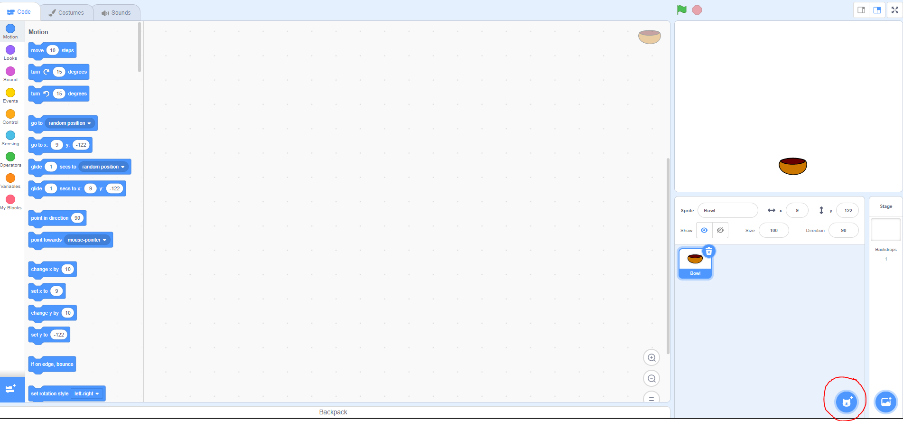
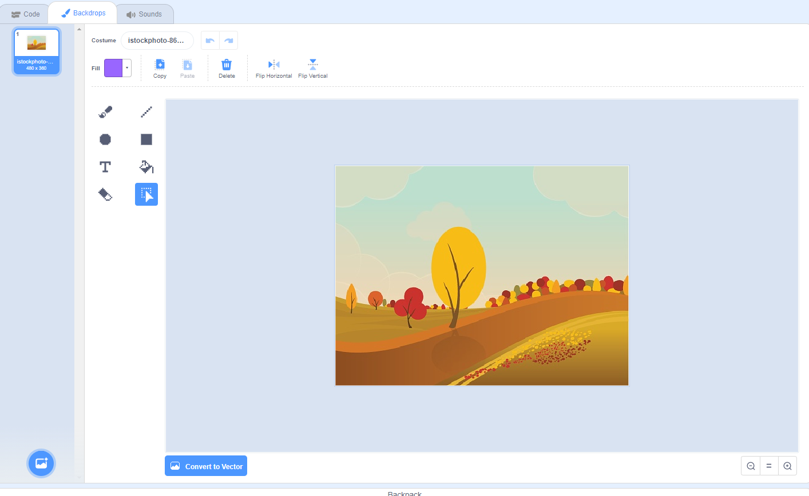
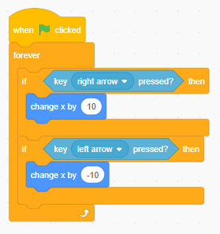
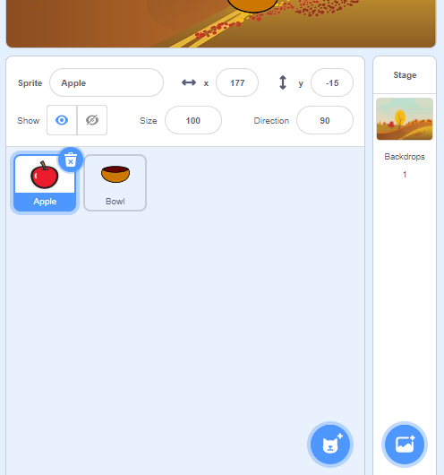
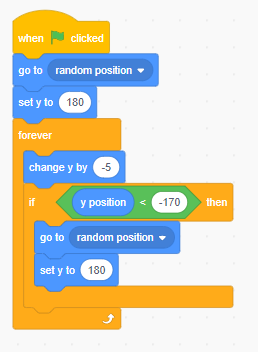
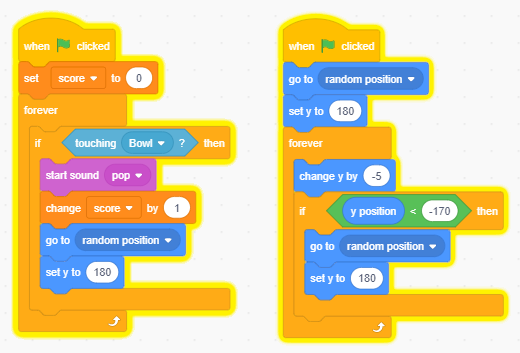
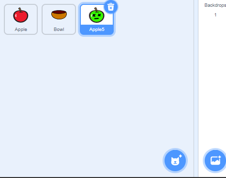
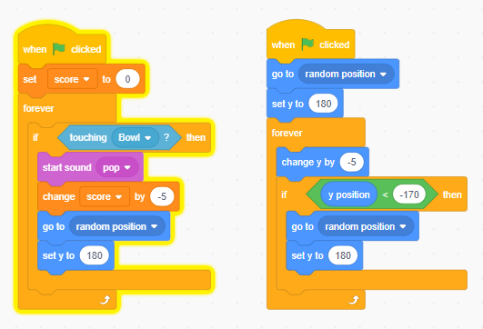
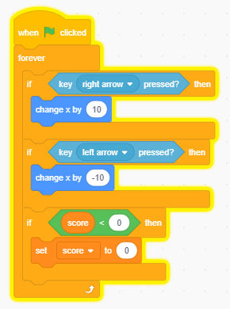

Catch The Fruit
Requirements: Scratch
Topics needed for lesson:
- scratch
- variables
- loops
- if statements
Instructions:
-
Choose the sprite you want your basket to be by selecting the button circled in red:

-
Select a backdrop of choice by going to backdrops and choosing from the various photos or uploading
your own.

-
Give your basket the ability to move: Add a forever loop block (anything inside this will run
forever).
Add 2 if statements, one that changes the x position of the bowl everytime the right arrow is
pressed, and
the other that changes the x position of the bowl negatively everytime the left arrow is
pressed.
This should allow you to move the bowl left and right based on your arrow keys!

-
Create a new sprite to represent the fruit to be caught:

In this sprite's code, we need to add a way for it to randomly spawn and fall to the floor.
To do that we need to first add the block of code that makes the fruit go to a random position, and
then set it's y point to 180 (the top of the screeen).
To cause it to fall to the floor, we need to add a forever loop. Within the forever loop, we change
the y position by a negative value.
Finally, we need to add a if statement to check if the fruit hit the floor. If it did, we need to
add a block to respawn the fruit at a random position at the top of the screen.
The code should look similar to the following:

-
Now that we have a falling fruit and a moveable basket, we need to add code to enable the basket to
catch the fruit and give us points
To do this, we first need to create a new variable called "score". In the fruit's code, we need to
set the score to 0 initially.
We then need to add a forever loop, that checks if our fruit is touching our basket/bowl. If it is,
we need to increase our score by 1 and reset the position of the fruit.
You can also add a sound of your choice when we catch a fruit.
Your code in the fruit sprite's code should now look similar to the following:

-
Now our game is fully working, however, there is no way to lose points. We can add a way to lose
points by creating a new sprite to represent a bad fruit:

We can copy the code from our "good" fruit to our new "bad" fruit's code. Once we copy it over, we
can change the score to decrease by 5 (or however mant points you desire).
The final code for the bad fruit should look similar to the following:

-
To prevent our score from going into the negatives, we can add the following code to our basket's
code:

-
Our game is now complete. You can add more falling fruit by duplicating the current fruit sprites by
right clicking and pressing "duplicate".

From here on out, you can continue building this game, adding whatever you want to it. :)
Complete/Final Code:
Basket Sprite's Code
Apple Sprite's Code
Bad Apple Sprite's Code